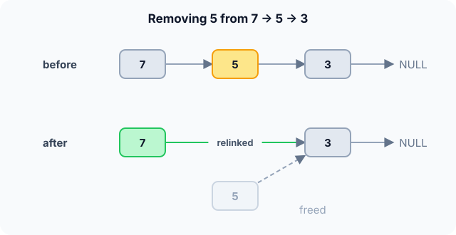

Prerequisites
- Structs in C: grouping a value and a pointer.
- Pointers and
NULL. - Arrays, to compare against.
The analogy
Everyday analogy
Think of a treasure hunt: each clue tells you where the next clue is hidden. You can only follow the clues in order, from the first one.
A linked list is that chain of clues. Each node holds a value and the address of the next node. Adding a clue at the start is easy; finding clue number 50 means following 49 clues.
How it works
Start with a sequence of operations by hand
The list is head → 5 → 3 → NULL. Do each operation and guess which pointers change before opening "Check".
Example: predict before you read
Step 1. push_front(7). Predict: how many existing nodes are touched?
Check
None. The new node 7 points to the old head 5, and head now points to 7: 7 → 5 → 3.
Step 2. Cover the next line and guess: searching for 3, which nodes do you visit?
Check
7, then 5, then 3. There is no shortcut: you follow next pointers one at a time.
Step 3. remove(5). Predict: which node's pointer changes?
Check
The node before 5, which is 7. Its next now skips 5 and points to 3: 7 → 3. Then 5 is freed.

Quick recall: Before reading further, cover the text above and say out loud: to remove a node from a singly linked list, which node do you need to find?
Check your answer
The node just before it, because that node's next pointer is the one that must skip over the removed node.
Finish the picture: the back of the list
Now add 9 at the back of 7 → 3, first with only a head pointer, then with a tail pointer too.
- Only
head. Predict: how many nodes do you walk?Check
All of them: 7, then 3, to find the node whose
nextisNULL. Then 3 points to 9. $O(n)$. - With a
tailpointer. Predict the cost.Check
One step:
tail->next = 9, thentail = 9. $O(1)$.
Quick recall: Without scrolling up, say out loud: why is adding at the back slow without a tail pointer?
Check your answer
Only the head is known, so you must walk all $n$ nodes to find the last one before you can link the new node.
The rule in plain words
Every node stores a value and a next pointer; the last node points to NULL. The list is reached through head.
To insert, create a node and rewire one pointer. To remove, make the previous node skip it. To find anything, start at head and follow next.
Quick recall: Before you read the code, write the steps of push_front in your own words. Then check below.
Check your answer
1. Create a new node with the value. 2. Point its next at the current head. 3. Make it the new head.
The code
Read this code after you have done the operations by hand. It will make more sense.
typedef struct Node { int val; struct Node *next; } Node;
Node *push_front(Node *head, int v) { /* returns the new head */
Node *n = malloc(sizeof(Node));
n->val = v;
n->next = head;
return n;
}Node *remove_value(Node *head, int v) { /* returns the new head */
if (head == NULL) return NULL;
if (head->val == v) { Node *rest = head->next; free(head); return rest; }
Node *p = head;
while (p->next && p->next->val != v) p = p->next; /* stop before v */
if (p->next) { Node *gone = p->next; p->next = gone->next; free(gone); }
return head;
}Definition
What you just did, in one line: a singly linked list is a chain of nodes, each holding a value and a pointer to the next node, accessed from a head pointer.
flowchart LR
H["head"] --> A["7 | next"]
A --> B["5 | next"]
B --> C["3 | next"]
C --> N["NULL"]
remove(5), where does the arrow out of 7 point? (Answer: to 3.)How fast is it?
Quick recall: Before looking at the table, predict: what does reading the 1,000th element cost?
Check your answer
Walking 999 next pointers: $O(n)$, compared with $O(1)$ for an array.
Reaching position $k$ (counting from 0) means following $k$ pointers. On average, over all positions:
$$\frac{1}{n}\sum_{k=0}^{n-1} k \;=\; \frac{n-1}{2} \;=\; O(n)$$Changing links next to a node you already hold is constant work: one or two pointer writes.
| Operation | Cost | Why |
|---|---|---|
| push_front | $O(1)$ | One new node, one pointer change |
| push_back | $O(n)$, or $O(1)$ with a tail pointer | Must find the last node |
| Access $k$-th element | $O(k)$ | Follow $k$ next pointers |
| Search for a value | $O(n)$ | May visit every node |
| Insert/delete after a known node | $O(1)$ | Rewire one pointer |
| Delete by value | $O(n)$ | Must first find the previous node |
Warning
Always handle the head separately. Removing the first node changes head itself, so a function that only rewires p->next will miss it. That's why remove_value returns the new head.
Exam tip
Draw boxes and arrows for every pointer question. "Insert after a known node: $O(1)$; delete a node when you only have a pointer to it: $O(n)$ in a singly linked list, because you need its predecessor."
Common mistakes
- Losing the rest of the list by overwriting
headbefore savinghead->next. - Dereferencing
p->next->valwithout first checking thatp->nextis notNULL. - Forgetting to
freeremoved nodes, which leaks memory.
Try it yourself
Exercise 1 (warm-up)
Starting from an empty list, do push_front(1), push_front(2), push_front(3). What is the list?
Hint
Each new node becomes the head.
Answer
3 → 2 → 1. push_front reverses the insertion order.
Exercise 2 (a bit harder)
Write the steps to reverse 1 → 2 → 3 in place using three pointers prev, cur, next. What is the cost? Write your answer down before you open it.
Show answer
Start with prev = NULL, cur = head. Repeat: save next = cur->next, set cur->next = prev, move prev = cur, cur = next. At the end prev is the new head, 3 → 2 → 1. One pass: $O(n)$ time, $O(1)$ extra space.
Did you know?
Did you know?
Linked lists appeared in 1955–56 in the IPL language by Newell, Shaw and Simon, built for early artificial-intelligence programs.
They're worth knowing because they hide inside many other structures: sparse matrices, adjacency lists for graphs, free-memory lists in allocators, and the undo history of editors.
Key points to remember
If you remember one thing from each line, remember the because.
- Inserting at the front is $O(1)$ because only the new node and the head pointer change.
- Access by position is $O(n)$ because nodes are scattered in memory and can only be reached by following
next. - Deleting needs the previous node because its
nextpointer is what must skip the removed node. - A tail pointer makes push_back $O(1)$ because it saves the walk to the last node.
- The head is a special case because no node points to it; removing it changes
headitself.
Self-check questions
Answer these in order, out loud. They follow the page, so your answers become the script of your video.
- How is a singly linked list like a treasure hunt?
Sample answer
Each clue says where the next one is, so you must follow them in order from the start. Each node points to the next node the same way.
- Walk through push_front(7) and then remove(5) on 5 → 3.
Sample answer
push_front makes 7 point to 5 and become the head: 7 → 5 → 3. remove(5) finds 7, the node before 5, and points it to 3: 7 → 3.
- Why does
remove_valuereturn a pointer instead ofvoid?A good answer mentions the first node.
Sample answer
If the value is in the first node, the head itself changes. Returning the new head lets the caller update its
headvariable. - So what is a singly linked list, in one sentence?
Sample answer
A chain of nodes, each holding a value and a pointer to the next, reached from a head pointer.
- Why is reading the $k$-th element $O(k)$ and not $O(1)$ as in an array?
A good answer mentions memory layout.
Sample answer
Nodes are not stored next to each other, so there's no address formula; the only way to reach node $k$ is to follow $k$ pointers.
- What do push_front, push_back, search and delete-after-a-known-node cost?
Sample answer
push_front $O(1)$, push_back $O(n)$ or $O(1)$ with a tail pointer, search $O(n)$, delete after a known node $O(1)$.
- When would you choose a linked list over an array?
Sample answer
When you insert and delete a lot at the front or next to nodes you already hold, and rarely need access by index.
- If you had to teach this to a friend in 2 minutes, what would you leave out, and why?
Sample answer
I'd leave out
malloc/freedetails and the tail-pointer variant. I'd keep the treasure-hunt analogy, the push_front and remove pictures, and "$O(1)$ to relink, $O(n)$ to find".
External resources
- VisuAlgo: Linked list: animate insert, remove and search on your own list.
- GeeksforGeeks: Singly linked list: operations with code in C.
- Wikipedia: Linked list: history, variants and trade-offs against arrays.
Videos
- YouTube search: singly linked list explained: pick a walkthrough with box-and-arrow drawings.